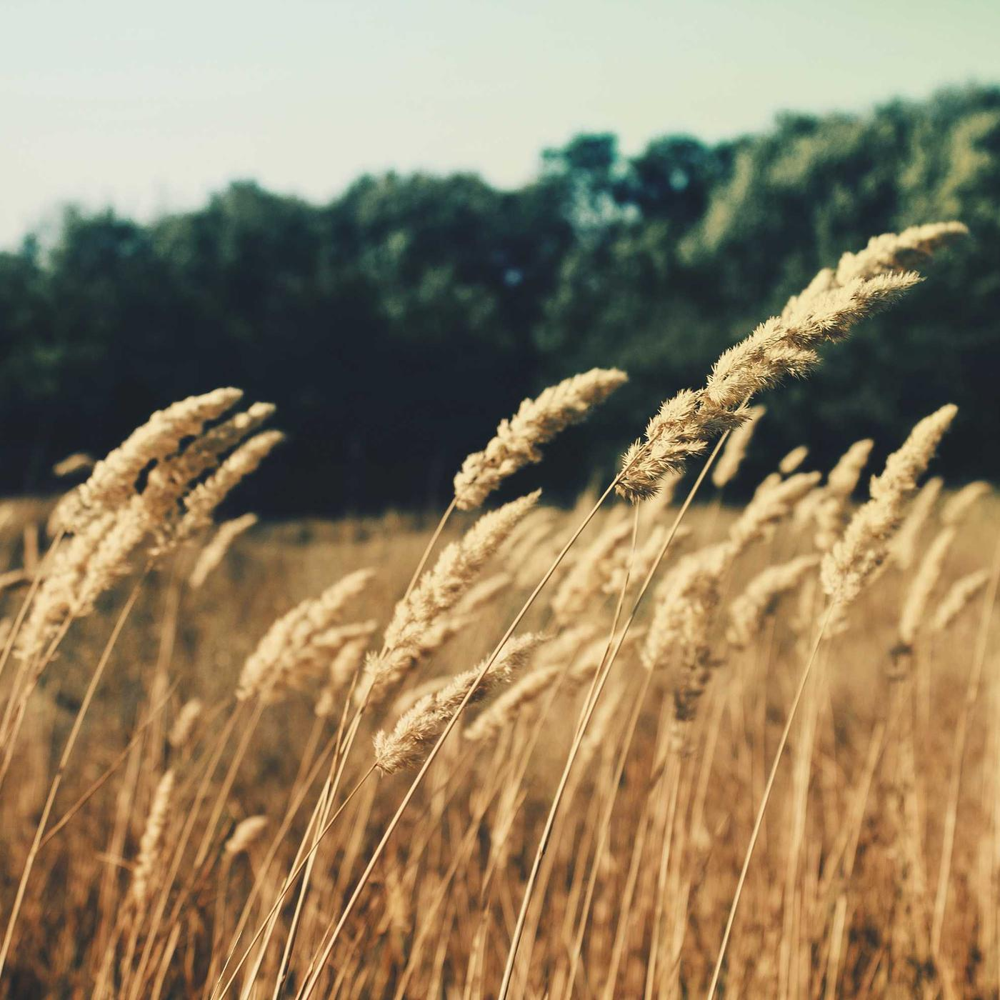
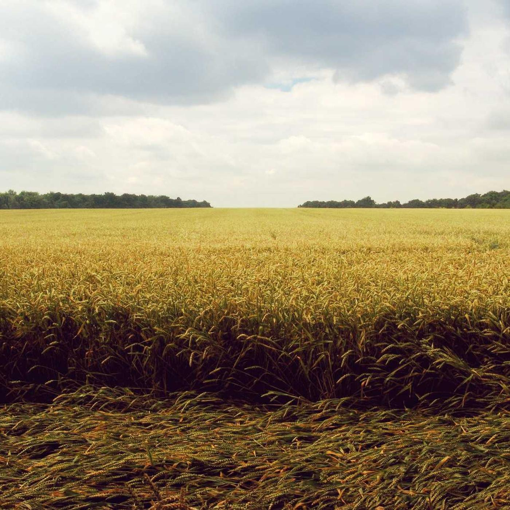
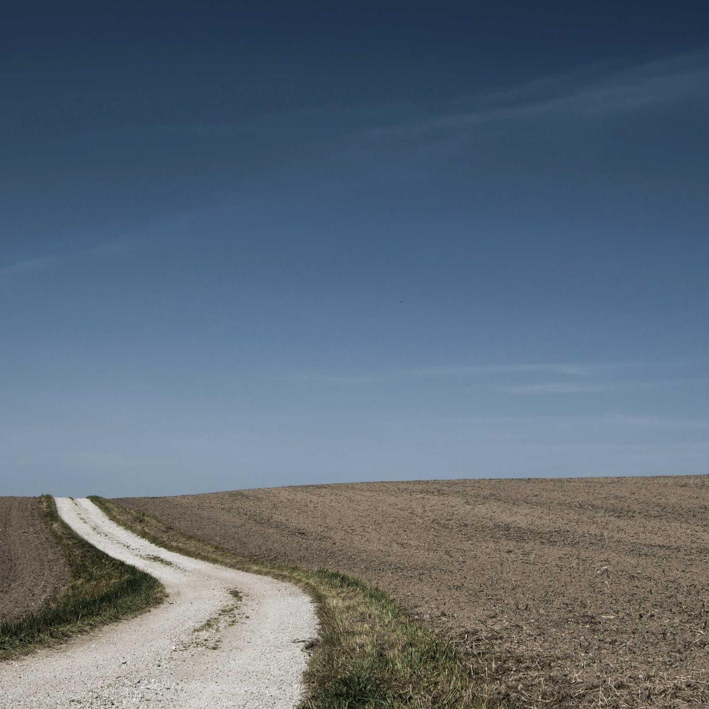
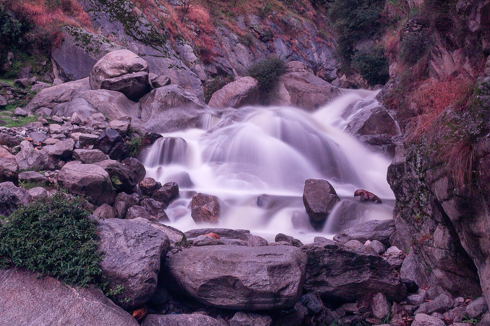

Pixel 10 Pro XL field card
Rig, expose and lock the phone on the OM 7P gimbal with K&F 67mm ND filters, before the light changes.
Set my exposure286 g
of the gimbal's 300 g limit. Phone 232, SmallRig 5174 clamp 35, one K&F ND 19.
Rig it in thirty seconds
-
Slide the SmallRig 5174 over the top edge of the bare phone so it covers the 0.5x ultra-wide and the 1x main.
-
Stop the right edge of the 67mm ring just left of the laser AF dot on the right of the visor.
-
Screw on the K&F ND for the light. One only on the gimbal: two filters take you to about 305 g.
-
Snap the OM 7P clamp 5–8mm closer to the camera bar, just below the volume buttons, with the Multifunctional Module on the bottom edge. Check horizontal balance before you power on.
0 of 4 done ·

Read the light
ND8
3-stop K&F filter
1/50s shutter, 180°
ISO 50–200
286 g on the gimbal, 14 g spare
Default walkaround filter for overcast daylight.
Fixed apertures
The 0.5x ultra-wide 
The 5174 ring covers the ultra-wide and the main. The 5x tele sits outside it, so it shoots unfiltered.
Back to the dialShutter and filter reference
Shutter at 180°
Shutter = 2 × frame rateKeep ISO between 50 and 400 for clean shadows.
Filters in the bag
K&F 67mm
ND42 stops
Golden hour and deep shade, ISO 50–250. Saves the sky when the bare lens clips at ISO 50.
ND83 stops
Cloudy, typical UK day, ISO 50–200. The default walkaround filter.

ND646 stops
Hazy sun at ISO 250–400, open midday sky at ISO 50–160. Essential for the f/1.68 main.
Or stack ND8 + ND4 for 5 stops, tripod only.

ND100010 stops
Motion blur and trails, ISO 50–100, shutter 1/2s to 2s for waterfalls.
Tripod only.
Lock the app down
10-bit HEVC for a fast turnaround.
ShutterSet the 180° rule
Settings (gear) › Camera › Shutter Measurement › Shutter Angle. Tap Shutter on the top HUD, choose 180° and tap the padlock until it turns blue.
StabilisationTurn digital stabilisation off
Settings › Camera › Stabilization › Off. EIS warps the picture when it fights the OM 7P motors.
ZebrasExpose with zebras at 95%
Monitor icon › Zebra 95%. Set ISO to 50–100. Stripes on clouds or skin: step up to the next ND. Still dark on the ND64: raise ISO to 200–400.
WB and focusLock white balance and focus
Tap WB, choose 5600K daylight or 6500K cloudy, and lock. Tap the subject to focus, then switch AF to MF so dark glass can't set off focus hunting.
RAW video or Direct Log.
ModePick the mode, then the spanner
Lower-left mode selector to Direct Log or RAW Video. Spanner (top left): Histogram on, OIS off for gimbal work. For 25p, scroll to the yellow hidden frame rates in the FPS menu.
PreviewEngage direct preview
Tap DP on the top bar, then the sun icon (sensor clipping) so blown RAW highlights glow on screen.
ExposureLock shutter and ISO
Tap Exposure (S / ISO). Slide the shutter to 1/50s (or 1/60s) and long-press until it turns yellow. Start ISO at 50 and raise to 160–400 until the RGB clipping circles read 0.00%.
WB and focusLock white balance and focus
Point at neutral ground and long-press WB until it turns yellow. Tap Focus, set peaking to Medium, dial focus in and leave it in manual.